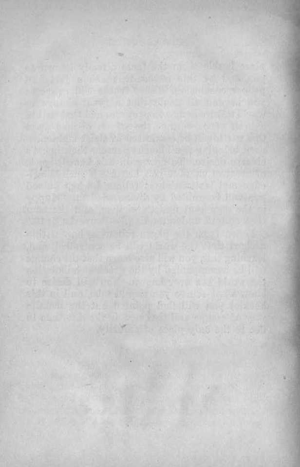
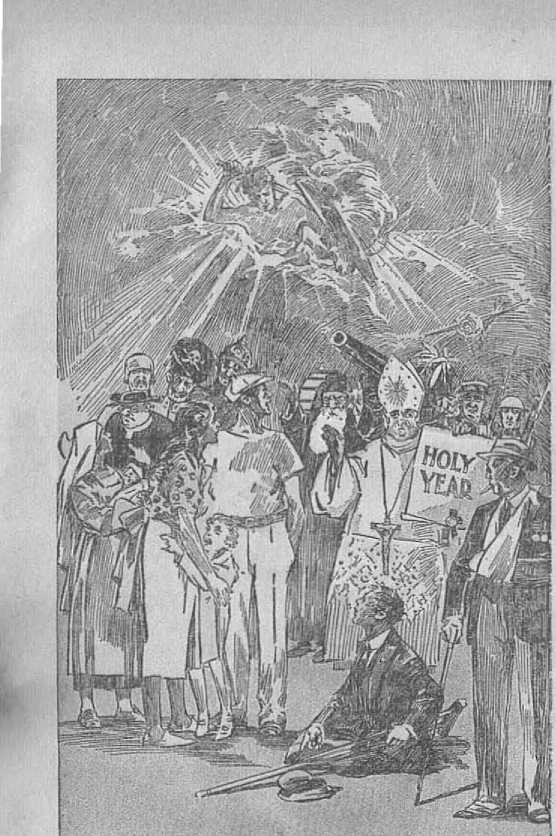
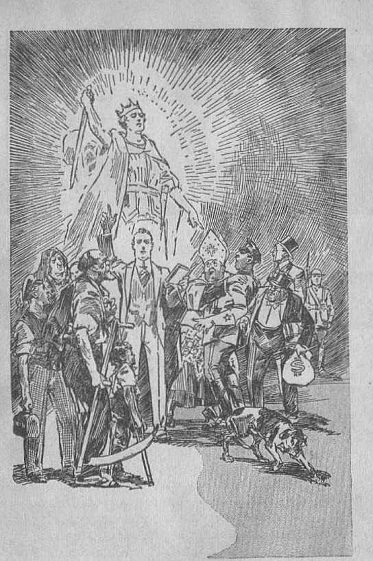
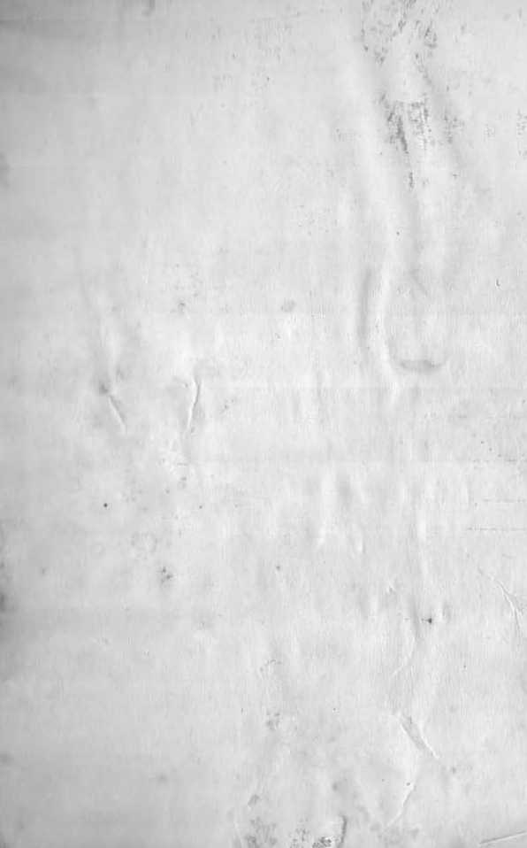
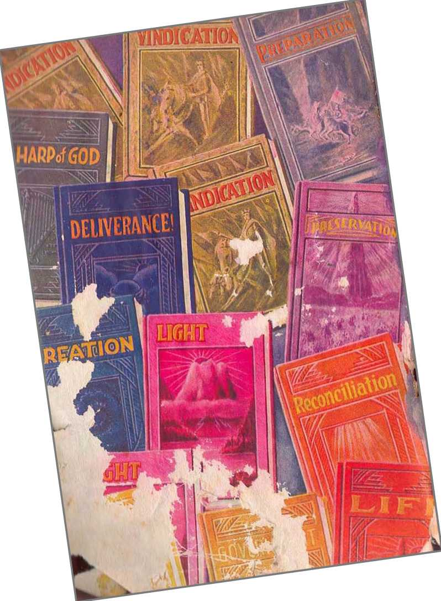

explained in
Two Bible Treatises
by
J. F. RUTHERFORD
A
Page
3 Introdaclion
7 World Control
28 Flee Now
This forceful, gripping message which you are to read herein has been hailed with joy and praise in Australia, South Africa, Europe, the West Indies and the North American continent, where it was heard direct by a vast transcontinental radio chain and by world-encircling short-wave radio transmission;
Hence the publication of this booklet will be greeted with pleasure by multitudes of radio listeners. You, and all other people of good will, will be sure to enjoy this and to benefit by it.
CoPYRianTED 1934 and Published by
WATCH TOW E R BIBLE AND TRACT SOCIETY International Bible Students Association Brooklyn, New York, U. S. A.
Made in the United States of America
Branch Offices:
London, Magdeburg, Paris, Toronto, Strathfield, Cape Town, Berne, Copenhagen, Stockholm, and other cities.
INTRODUCTION
A RIGHTEOUS RULER is the sincere desire of all honest persons. After many centuries of effort on man’s part to build an ideal government failure is the nei^result and the people are discouraged, perplexed and distressed. In all nations the people have suffered because of unrighteous rulers, and that suffering is even worse today than in times past. The proverb written long centuries ago is just as true this day: “As a roaring lion, and a ranging bear, so is a wicked ruler over the poor people. The [ruler] that wanteth understanding is also a great oppressor."—Proverbs 28:15,16.
With but a few exceptions the people have lost hope of ever having a righteous ruler and a desirable government. Their lack of hope is due chiefly to their lack of knowledge concerning the cause of world distress and their perplexity. A man assumes a high office as governor and announces to the people that he “trusts in divine guidance”, and for a season the hope of the people is revived; but when they witness the failure of the ruler to bring about righteousness, peace and prosperity, they lose faith in man and in God, The result is the increase of unrighteousness and crime.
Do not ho hasty to lay upon the shoulder of imperfect man the blame for such conditions of distress. All men make mistakes, regardless of their good intentions. Lack of a proper understanding is the cause of many such mistakes on the part of the governor and on the part of the governed. “Where there is no vision, the people perish."’ (Proverbs 29:18) A man may easily say, “I depend upon divine guidance in the administration of governmental affairs,” but to be divinely guided is a far different thing. God guides men by and through his Word, which is set forth in tire Bible. “Thy word is a lamp unto my feet, and a light unto my path.” (Psalm 119:105) The only way to know God's purpose is to be taught by his Word. ‘The teachable he will guide in judgment.’—Psalm 25: 9.
You will find in the Bible that God clearly explains why the rule of the world is unrighteous. Best of all, you may there be taught that Jehovah is the just, wise and loving God and that soon, by his grace, the end of unrighteous rule shall come and the rule of righteousness take its place and continue for ever. There is within your reach this great storehouse of invaluable knowledge, and the gaining of that knowledge will bring to you peace of mind and contentment beyond the description of human words.
What follows in this booklet is published for the very purpose of enabling you to find in the Bible ’where these truths are written and to
place beside them the facts already known to yon and by this means to reach a just and proper conclusion. These truths will prove to you beyond all doubt that a great change in world affairs is now in progress and that within a brief space of time the affairs of men upon this earth will be conducted in strict righteousness, bringing to all honest persons their heart’s sincere desire. To now gain this knowledge is of greatest value to you, because if such knowledge and instruction is followed when gained you will be guided by divine wisdom, ''Happy is the man that findeth wisdom, and the man that getteth understanding.”—Proverbs 3:13.
Learn from the pages following how within a short time the world will be controlled, and, learning this, yon will also learn that the change will be accompanied by the greatest tribulation the world has ever known. You will desire to know what course you should take, and in this booklet you will find pointed out the definite way of escape and that now is the due time to flee to the only place of security.
(Chain broadcast from Z,os Angeles, March 25, 1931, by Judge Hrrtherford)
FOR several years past it has been my privilege to tell the people God’s message of truth as it is set forth in the Bible and to use the radio for that purpose. The truth is not popular, and lienee provokes much opposition. Nineteen centuries ago God sent Jesus to earth to deliver his message of truth. Jesus faithfully performed his commission and was crucified for telling the truth. The truth will never be popular until there is a complete change of world control. I beg you to carefully follow my speech now, that you may more fully appreciate why there is such great opposition to the truth and what is the only safe and proper course for the people to take. The people of good will must now hear, because this message is for their special aid and comfort in this day of great world distress. It is not the message of any man, but the message from God’s Word delivered according to his will.
First I give the Scriptural definition of "world”, and then show you who controls the world and why a change of world control must shortly come to pass. 'World” means the peoples of the earth organized into forms of government under the supervision of an invisible power or 7 overlord. In the Bible the word “heaven” is used to represent the invisible part of that rule, while “earth”, as there nsed, means the visible power that rules; and it is "heaven” and “earth” together which constitute the world. The people of good will are those who have an honest and sincere desire to see justice and righteousness control everything, and hence that the will of God may be done on earth and in heaven.
God, “whose name alone is Jehovah,” is the Supreme Being and the source of righteousness and life. Jesus Christ is the Son of God, the chief executive officer of Jehovah, the Redeemer of man, and the world’s rightful ruler. Satan the Devil i§ the wicked one, the opposer of God, and man’s greatest enemy. For centuries Satan has been the invisible overlord or controller of the world. There must be a change from Satan’s rule to that by Jesus Christ. That change is impending and will take place within this generation. Mow I give you the proof showing how the Devil became the ruler of the world.
Jehovah God created the earth and put perfect man upon it, and made the spirit creature Lucifer the invisible overlord of the earth. Associated with Lucifer were many spirit creatures or angels forming a part of his immediate organization. Lucifer rebelled against Jehovah God, in which rebellion his host of angels joined, and man was led into lawlessness and sentenced to death. Since the entire human race sprang from that one man after he had sinned and was sentenced to death, all mankind have been born imperfect. (Bomans 5:12) God changed the name of Lncifer to that of Devil, Satan, Serpent and Dragon, and since then Satan and his host of wicked angels have controlled the world.
Satan defied Jehovah God to put on earth men that would be faithful and true to God. That challenge God accepted. Although sentenced to death Satan and his wicked angels have been permitted to continue for a definite period of time unhindered in the prosecution of their wicked work, God abiding his own due time to take action against them. As the human race increased on the earth, other angels which had been wholly devoted to God materialized in Inunan form and were induced by Satan and his wicked angels to mingle with humankind and marry the daughters of men, and from that union there came forth an unusual offspring. There followed a period of great wickedness in the earth, and God announced his purpose to destroy the ‘‘world that then was” by a flood. That time in the Scriptures is called “Noah’s day”, because Noah was a righteous man and remained true to God.—Genesis 6:1-17,
Jehovah God then told Noah to build an ark in wdiich he would find refuge for himself and the immediate members of his household. Noah did as commanded, and then there came upon the world the deluge or great flood which destroyed all flesh. That destruction of all flesh was a type foreshadowing the destruction of the present wicked world. The saving of a few persons who found refuge in the ark pictured or foreshadowed the millions of people of good will who will be carried through the battle of the great day of God Almighty soon to be fought. A knowledge of the truth of and concerning these things is now of most vital importance to all persons of good will; hence that message is now declared as a notice and warning to all such people.—1 Peter 3:19, 20; 2 Peter 3: 5-7.
In the flood God destroyed all flesh, but he did not destroy the Devil and the other wicked spirits, but permitted them to continue to exercise power and influence over humankind until God's due time to take action. Why did uot God then destroy the Devil? Jehovah’s answer to that question is found in the Bible, at Exodus 9:16, in these words: “But for this cause have I allowed thee to remain, in order to show thee my power; and in order that they [my witnesses] may proclaim my name throughout all the earth.” (Exodus 9:16, Leeser) But the day of final reckoning must come, and in that day Satan and his power will be completely destroyed and there will be a complete change in the rulership of the world.
After the flood the human race multiplied in the earth and then men began to organize themselves into governments, the first organization being under the leadership of Nimrod. In that government and in every government from then till now three elements have constituted the visible ruling power, to wit, religion, politics and commerce. During all that time Satan the Devil has exercised his subtle power over the men of the nations, defrauded and deceived them, and led them away from the true God. But in all the centuries past God has had a few men on earth who have remained true and faithful to him, and such men he has caused to be his witnesses in the earth.
Then Jehovah organized the people of Israel into a nation for himself and used that nation to foreshadow and foretell his purpose toward the human race. For some time that nation was faithful to God, hut in the course of time the rulers and people fell under the wily influence of the Devil, turning away from G'od, and then that nation was completely destroyed. Israel was a type foreshadowing “Christendom”. The nations of earth now called “Christendom” began to serve Jehovah, but in the course of time those nations fell away from the true worship of God, yielded to the seductive influence of Satan, and became corrupt, and God’s decree is that they shall be completely destroyed at Armageddon, even as Israel was destroyed.
Satan, the wily and subtle foe, in order to deceive man, has caused the people to be kept in ignorance of himself and his work, his agents even denying that Satan exists at all. The question which you must determine now is whether you will believe and accept the word of man or believe and accept the truth of the Bible, which is God’s Word. This message is addressed to those who believe that the Bible is the Word of God; and it will be a comfort to them, but not to others. Now the world is in great distress; the rulers in every nation under the sun are in very great perplexity. They sense disaster ahead, but do not know the reason why, nor will they give heed to the Bible truth of and concerning the same. Many religious leaders have told you that the present trouble upon the world is a punishment from God, whereas the Scriptures plainly state that Satan the Devil is the one causing the great distress and woe now upon the people. Therefore it is written: “Woe to the inhabiters of the earth, and of the sea! for the devil is come down unto you, having great wrath, because he knoweth that he hath but a short time.” (Revelation 12:12) Now I tell you why Satan has brought this great woe upon the nations of earth.
At the beginning of Satan’s rebellion Jehovah God promised that He would produce a “Seed” that would in due time rule the world in righteousness, destroy Satan and his organization, and bring blessings of peace, prosperity and life to all the peoples and nations of the earth that would do justice and righteousness.
That promised “Seed” or Ruler is Christ Jesus, the beloved Son of God. Concerning him it is written: “The government shall be upon his shoulder; and his name shall be called Wonderful Counsellor, The mighty [Ruler], The everlasting Father, The Prince of Peace. Of the increase of his government and peace there shall be no end, . . . The zeal of [Jehovah] of hosts will perform this.” (Isaiah 9: 6, 7) Thus Christ Jesus is identified as earth’s rightful miler, by and through whom the human race must receive the desired blessings.—Gen. 3:15; 12:3 ; 22:18.
In A.D. 33 the man Jesus, after having delivered God’s message of truth to Israel, was killed by Satan’s agents. God then raised Jesus out of death and gave him life divine and made him the most exalted one in the universe and appointed him to the office of King or Ruler of the world. Jesus was required to wait, however, until God’s due time for him to assume his rulership. (Psalm 110:1) When on the earth Jesus declared that he must go away and receive the Kingdom and that he would then come again and sot up the Kingdom; and for that reason he taught Christians to pray: ‘Thy kingdom come; thy will be done on earth.’
In answer to the question as to what would be the proof of his coming and his kingdom Jesus stated that the world war would mark the beginning of his operations concerning the world. That world war came in 1914 in fulfil-merit of the prophecy uttered by Jesus. It was in that year that Jehovah God installed Jesus and commissioned him to rule the world. (Psalm 2:6-12) Christ Jesus is a spirit now, and cannot be seen by human eyes. As Satan has long been the invisible ruler over the world, hence unseen by men, so now his rule must cease and Christ Jesus becomes the invisible ruler and controller of the world. Jehovah God has for centuries suffered or permitted Satan to be the invisible ruler; but now that time limit is up and the end of Satan’s world lias come, and the time for Christ Jesus to take over the affairs of the world, and just before he begins the administration of blessings he will destroy the wicked ruler of this world and all who support that wicked ruler.
Satan knows that it is only a short time until Armageddon, which will be the final fight by Satan and his angels on one side and Christ Jesus and his angels on the other side, and, knowing this, Satan brings great woe upon the world, his purpose being to turn the people away from the true God and cause their destruction. This is further supported by the words of Jesus, who said that at the end of the world there would be great distress upon earth, with perplexity, and men’s hearts failing them because of things they sense coming upon the world. This is exactly the condition that we see today. The great change from unrighteous to righteous rule or control of the world is impending.—Luke 21: 25, 26.
Seeing the great danger of world collapse, earthly rulers organized the League of Nations as a substitute for God’s kingdom, and the religious element of the world hails that League of Nations as "the political expression of God’s kingdom on earth”; which claim is wholly false. Today an organization in America known as "The League of Nations Association, Inc,”, by its president, lias issued an appeal to the people to support the League of Nations, and ■which appeal among other things says: "In a world as dark as this, why blow out the only light there is?” meaning that the League of Nations is the only hope of the world. I warn the people that the League of Nations is the product of Satan, brought forth to deceive the people and blind them to the truth concerning God’s kingdom. The League of Nations is absolutely certain to go down with the other parts of Satan’s organization. God foreknew and foretold this confederacy of nations, and concerning it by his prophet he said : ‘Associate yourselves together, 0 ye people, and ye shall be broken in pieces. . . . Bind yourselves together, and ye shall be broken in pieces. Take counsel together, and it shall come to nought.’—Isaiah 8: 9,10.
In giving his answer concerning the evidence proving the end of the world Jesus referred to the League of Nations as that “abomination that makelh desolate”, because it assumes to take the place of God’s kingdom. He said to his followers : ‘When ye shall see the abomination of desolation [which is the League of Nations] stand in the holy place, then flee to God’s kingdom.’ (Matthew 24:15,16) Jesus gives this warning because the League of Nations is Satan’s scheme to blind the people to the truth. All who seek refuge in the League of Nations ' will come to disaster. God’s kingdom under Christ is the only hope of the human race, and refuge will be found only in God’s organization.
For more than 1800 years the Israelites were God’s typical people, and it is expressly stated in the Bible that what came to pass in connection with that nation foreshadowed what shall come to pass at the end of the world, where we now are. The nation of Israel began to function while domiciled in Egypt, and there the people of Israel pictured or represented the peoples now on earth who are on the side of God and Christ and who desire to see righteousness control and oppression end. Pharaoh, the king of Egypt, represented or stood for Satan, the god or invisible ruler of the wicked world. Pharaoh and the officers of his government heaped great oppression upon the Israelites. Jehovah God sent Moses and Aaron to Egypt to be witnesses to his name and power. Moses was a type of Christ Jesus, while Aaron was a type of Jehovah's witnesses working under the direction of
Christ Jesus. God commanded Moses and Aaron to go before Pharaoh and demand that his people Israel be permitted to serve and worship God in the way that Jehovah had appointed for them. Pharaoh refused to grant that request. Then God commanded Moses to bring plagues upon Egypt, that the rulers and the people might be informed and warned that Jehovah is the Almighty God and that his commandments must be obeyed. In all there were ten plagues that befell Egypt. The ninth plague was that of great darkness over all the land of Egypt except that part where God's chosen people were, and there the Israelites had complete light, which was a special favor from Jehovah.
Now at the end of the world Jehovah has sent Christ Jesus the Greater Moses and has sent forth his witnesses, pictured by Aaron, and commanded that his testimony must be given to the rulers of the world and to the people that Jehovah is the Supreme One and that his people shall be permitted without interference to worship and serve God in the way he has appointed for them. In the year 1919 the religious, political and commercial elements of "Christendom” sot up the League of Nations in opposition to God’s kingdom under Christ, and since then all these visible rulers have vigorously opposed Jehovah's witnesses. At the command of the Lord his witnesses have served notice and warning upon the rulers that the world has ended, and that the kingdom of God is at hand, and have demanded of the rulers that God's people be permitted without interference to serve and worship him in the manner Jehovah has appointed for them. The serving of such notice and warning constitutes the fulfilment of the nine plagues of Egypt; which nine prophetic plagueshave been fulfilled upon the rulers of the world. As the ninth plague on Egypt was great darkness, just so now the rulers of the world are in great darkness as to God’s purpose, because they refuse to heed God’s truth. This is particularly shown by the fact that the League of Nations is openly claimed to be the only light that now shines on earth. The only exception to this great darkness is that those persons who have taken their stand on the side of God and his kingdom are now enjoying the light of the Word of God and by it are directed in the right course. At the conclusion of the ninth plague upon Egypt Pharaoh said to Moses and Aaron: T3e gone and see me no more.’ Even so now after the ninth antitypical plague has been served upon the rulers of the world, they have in effect said to Jehovah’s witnesses: ‘Be gone and let us have no more to do with you.’ Pharaoh defied Jehovah God. The rulers of the world are now doing the same thing. They oppose Jehovah’s witnesses and spurn God’s warning, and they reject God and his kingdom.
After this, and in harmony with the will of God as he has commanded, Jehovah’s witnesses will give no further notice and warning to the rulers of the world, but must now bring to the attention of the people of good will the message of notice and warning concerning Armageddon and God’s kingdom, even as Moses and Aaron gave special instruction to the Israelites just before the tenth plague came upon Egypt.
The firstborn of Egypt under their law constituted a specially favored class; and hence in the prophetic picture the firstborn represented the present visible ruling element of the earth. The tenth and last plague which God sent upon Egypt was this: He sent his angel throughout the land of Egypt and slew every one of the firstborn of the Egyptians, but gave protection to the firstborn of the Israelites because they obeyed his commandment, showing faith in man’s Redeemer. The Israelites immediately left Egypt and were pursued by Pharaoh and his official organization, all of which were destroyed in the sea. That foreshadowed or pictured Armageddon, which will mean the complete destruction of Satan’s rule of this world, both visible and invisible.
The Scriptures reveal that God never takes advantage of the ignorance of anyone, but always gives notice and warning before taking action to vindicate his name. Mark this, that he caused Noah to testify to men and angels of his purpose to destroy the world before he brought the flood, which destroyed the world. He caused Moses and Aaron to give full notice and warning to Egypt, and then came the destruction of that world power. He caused Jesus to give fair notice and warning to the rebellious nation of Israel, and then followed the destruction of that nation. Now Jehovah has caused his witnesses to give full and fair notice and warning to the rulers of this world; and when this witness work is completed, there shall quickly follow the complete destruction of the world. The flood, the destruction of Egypt, and the fall of Jerusalem brought great trouble upon the people, but Jesus declares that Armageddon shall bring upon the world the greatest tribulation ever known, and that it will be the last. (Matthew 24:14,21,22) Hence we may know that the impending battle of Armageddon will be the final and complete execution of Jehovah’s judgment against the wicked, both invisible and visible.
Armageddon will not be fought between men of the nations of earth. Armageddon is the ‘battle of the great day of God Almighty5, in which Christ Jesus and his angels will light against Satan and his wicked host, and Christ will be completely victorious. Mark now the words of the record in 2 Peter 3, to wit: Tn the last days shall come those who will deny and scoff at the kingdom of God, and for this they willingly are ignorant of the truth, that by the word of God the heavens and earth that were of old, constituting the world that then was, being overflowed with water, perished; but the heavens and the earth which are now, by the same word are kept in store, reserved unto [destruction] against the day of judgment and perdition of ungodly men. . . . Looking for and hasting unto the coming of the day of God, wherein the heavens, being on lire, shall be dissolved, and the elements [visible ruling powers] shall melt with fervent heat.’—2 Peter 3: 3-7,12.
Those inspired words recorded in the Bible tell what shall shortly come upon the world, malting a complete end of Satan’s rule, thus clearing the way for the righteous rule of Christ Jesus. Continuing the apostle says: "Nevertheless we, according to his promise, look for new heavens and a new earth, wherein dwclleth righteousness,” (2 Peter 3:13) This marks the complete change of world control, the “new heavens” being the Christ or invisible rule, and the “new earth” meaning those faithful men of old from Abel to John the Baptist, who being resurrected as perfect men shall become the visible rulers in the earth; and that rule shall be one of righteousness-Psalm 45:16; Isaiah 32:1.
In Revelation 21 the new rule of the world is symbolically called “the holy city” or organization, and is described as coming down from God out of heaven, which holy and righteous rule under Christ shall bring the greatest blessings to the people. Exercising his supreme power by and through Christ Jesus, Jehovah the great God of the universe will then bless all the people who obey his righteous law. “And God shall wipe away all tears from their eyes; and there shall be no more death, neither sorrow, nor crying, neither shall there be any more pain: for the former things are' passed away. And he that sat upon the throne said, Behold, I make all things new . . ■ : for these words are true and faithful.”—Revelation 21: 4,5.
Again I bring to your attention that the so-called “holy year" has failed to bring the promised peace and prosperity, and that failure of itself should convince the people of good will that God did not authorize the year 1933 to be called a holy year, nor will he answer the prayers of men who try to make it a holy year. Upon earth there is now no peace, and poverty continues to stalk hideously through the land. As Jehovah’s witnesses we have no controversy with men. Our only purpose is to be obedient to God’s commandment to tell the message of truth. As he has commanded this message to be delivered, by his grace we will do it, regardless of opposition; and when we have thus done, our responsibility ends and yours begins. I must tell you that all human schemes to recover the world are certain to fail. The world is sick unto death, and it is going to die. There may be a temporary period of prosperity, but it will be very brief. Jehovah’s decree is that there shall be a complete change of world control, and for this reason the old world must perish.
In the terrible disaster that shall soon come upon the present world all who oppose God will die and will find no possible way of escape. (Jeremiah 25 : 33-36) Money, property and worldly influence will not avail anyone to buy protection or relief in that time of great trouble. Concerning the same it is written jn God’s .Word: "The land shall be utterly emptied, and utterly spoiled: for the Lord hath spoken this word. The earth also is defiled under the inhabitants thereof, because they have transgressed the laws, changed the ordinance, broken the everlasting covenant.” (Isaiah 24; 3, 5) The everlasting covenant here mentioned is God’s covenant concerning the sanctity of life. (Genesis 9:1-11) Every nation on earth hag grossly violated and willfully broken that covenant by causing the unnecessary and untimely death of human creatures. Examples of such needless bloodstains upon the record of America arc the cruel treatment to which the Indians have been subjected, and the wanton slaughter of animals; and which was done chiefly because of greed for gain. The commercial and political elements of the earth have unjustly oppressed and killed millions of human creatures, and the religious element has connived at and condoned such wrongful deeds. God will balance the books at Armageddon.
I warn the people of a wicked conspiracy formed by Satan, and in which conspiracy there are joined the international bankers, the unfaithful clergy, and the conscienceless politicians, among the purposes of which conspiracy are these: To put America in the League of Nations, control the money and all other property, rule the people by the hand of their one-man dictator, destroy the freedom of speech and press, and stop the true worship of God and Christ.
But be of good courage! The hand of Almighty God at Armageddon will smite all these enemies to the dust!
What, then, is the hope of the nations of the earth? Jehovah God points to Christ Jesus, the new Ruler of the world, and says: ‘Behold my servant, in whom my soul is pleased. He shall show righteous judgment to the nations, and in his name shall the nations hope.’ (Matthew 12:18-21) Having been warned, men are at liberty to join whatsoever organization they may wish; but let the people of good will who desire to see righteousness, peace, prosperity and life everlasting on the earth take their stand wholly on the side of God and his kingdom. There is no place of safety anywhere else. To take your stand on Jehovah’s side you do not need to join any human organization, but in the privacy of
_____
‘Saying, Peace, peace: when there is none.’ Page 22
your home devote yourself to God and his kingdom under Christ. Be diligent to study the Word of truth and learn the way of righteousness. Avoid all controversies and strifes. If riots and revolutions come, keep away from them. Deal honestly and justly with your fellow man, and worship and obey the Almighty God. There are on earth today millions of people of good will who desire to know and to do what is right, and those who follow the instructions given to them in the Word of God may be hid in the time of the great tribulation, and be carried through it safely, and then live for ever on the earth and never die. Hence it can be truly said, “Millions now living will never die.”
Opposers of God’s truth may soon make it impossible for a time for you to hear the message of G od's kingdom by radio, but Jehovah has provided other means. This speech, and others containing his message electrically transcribed, will be delivered to the people in every part of the land. Look for notice of sueh coming meetings and then assemble yourselves together and hear the truth and learn the way of righteousness. The change of world control just at hand not only will bring relief to suffering humanity but will bring boundless blessings and endless joy to those who obey God.
All who desire the righteous kingdom of Jehovah under Christ, and who are seeking safety, must take their stand now on the side of Jehovah. I propose that this audience, visible and invisible, adopt the following resolution, to wit:
Resolved, That we do now take our stand on the side of Jehovah God and his kingdom; and that we will obey, serve and worship Jehovah God and his beloved Son, Christ Jesus, who is the rightful Ruler of the world, and we will thus participate in the vindication of Jehovah’s name.
BACK UP YOUK STAND!
To hold to your resolve to line up henceforth on the side of Jehovah God and his organization under Christ Jesus you need and will want real help. You do not need, in fact, it would be the wrong step, to join any human religious organization. You will appreciate that especially after reading “Flee Now”, next appearing herein.
HOLD your position and grow strong therein by reading Judge Rutherford’s hooks, right in your own home, free from religious entanglements. These books are unscctarian, undenominational, nonpolitical, strictly Biblical, true to fact and Jehovah God.
Herewith their titles: The Harp of God Deliverance Creation Reconciliation Government
Preservation
Life -
Prophecy
Light, (two books)
Vindication (three books) Preparation
Beautifully bound in cloth, illustrated in color, and indexed; each of 362 or more pages. All fourteen, $3.50; any four, $1.00; singly, 25c; sent postpaid anywhere. Free catalog on request. Order from
The Watch Tower, 117 Adama St., Brooklyn, N.Y.
(Broadcast over chain from WBBR May 0, 1934, by Judge Rutherford)
THE information contained in this speech is given for the benefit of all persons of good will, regardless of creed, denomination, race or color. The world is in a most critical state, and all information obtainable from the Scriptures, concerning the same, should be diligently sought by those who hope to see peace.and righteousness prevail. The enemy, being unable to meet truth with truth, resorts to means of preventing the truth from being made known. There is no desire on the part of Jehovah’s witnesses to do injury to any creature on earth, but there is every desire to be obedient to God’s will and do good to mankind by telling them the truth.
Jehovah God is entirely unselfish, and for that reason it is written in the Scriptures: "God is love.” He does not have any pleasure in the wicked. The wicked are an abomination unto Jehovah, and for the good' of all creation he will in due time destroy all the wicked. His time to destroy the wicked is near. (Revelation 11: 15-18; Psalm 145:20) He does not take advantage of the wicked, but gives such fair notice and warning before destroying them. God has permitted Satan to go on for centuries unhindered in his wickedness; but now the end is 2S come, for 'this is the day of vengeance of Jehovah’ against all wickedness. In these last days Jehovah has caused full notice and warning to he given to the workers of lawlessness, and such notice and warning the powers that control the world have spumed, and the day of their destruction draws nigh. Before the greatest tribulation of all time falls upon the world Jehovah causes notice and warning to be given also to the common people, to the end that all who will may flee to the only place of safety.
The greatest teacher given to man is Jesus Christ. Clothed with all power and authority in heaven and earth, and into whose hand is committed all righteous judgment and the execution thereof, Jesus Christ speaks with absolute authority. When the world receives information from an ordinary man upon a question of importance heed is given thereto. With stronger reasoning should all men give strict attention to the words of authority spoken by the great and righteous Ruler of the world. More than nineteen centuries ago, and just before he left earth, Jesus spoke a message of warning to the people of good will who should be on earth at the end of the world, and that message particularly applies to the peoples now on earth, because it is the time of its fulfilment. We are enabled to understand prophecy only after its fulfilment has begun; and, now having clearly before our eyes the physical facts showing a fulfilment of the prophecy of warning uttered by Jesus, it is high time that we give heed to such warning.
That great prophecy uttered by Christ, and recorded in the twenty-fourth chapter of Matthew, fixes the specific time when the warning must be made known to the common people and the time when they must flee if they would find a place of refuge. Jehovah’s witnesses are now given the command to 'preach this gospel of the Kingdom to the world for a witness; and then the final end is certain to come’. (Matthew 24: 14) For some time in obedience to this prophetic commandment there has been given in the world a wide proclamation of this good news, the people being told that the kingdom of heaven is here and that it is the only hope of the world. To those who have looked for the rule of righteousness on the earth Jesus further says: “When ye, therefore, shall see the abomination of desolation, spoken of by Daniel the prophet, stand in the holy place, (whoso read-eth, let him understand:) then let them which be in Judaea flee into the mountains.”—Matthew 24:15,16.
This message is addressed to those who are “in Judfca”, and they are the ones who are directed to flee. The message of warning must be delivered by those who are 'of Judsca’ because such are the ones commissioned to speak as the witnesses of the Lord. A “Judean” is one who is devoted to the praise and service of Jehovah
God and who is diligent in giving obedience to God’s commandments. (Hebrews 13:15) These Judeans are designated as the witnesses of Jehovah, to whom is committed the testimony of Jesus Christ, and who in obedience to his commandments must deliver that testimony to those of the world who will hear. (Revelation 12:17 ; Isaiah 43:12) They are commissioned by the Lord to declare that this is the day of the vengeance of Jehovah. (Isaiah 61:1,2) They are commanded as the witnesses of Jehovah to speak this message of warning in the hearing of and for the benefit of the “prisoners” and those people of good will now on earth called “Jonadabs”. These two classes last named are the ones who are “in Judaea”, that is to say, who are in heart sympathy with righteousness and who desire to see God’s will done on earth. This message of warning is delivered to them in due time according to the Lord’s commandment in order to afford them an opportunity to flee to the place of refuge and find protection during the time of great tribulation that is impending and about to fall. The dear distinction between those who are in Judea and those who are of Judea enables us to have a better understanding of the prophecy uttered by Jesus and which is now in course of fulfilment. To be sure, no good could result from the abuse of men, and there is no desire on the part of Jehovah’s witnesses to hold up men to ridicule. The truth of God’s
Word, however, must be declared, and it is God’s truth that gives hurt to those who are opposed to it. Let us determine from the Word of God, then, who are these “prisoners” and who are "Jonadabs”, in order that we may appreciate the application of this great prophecy uttered by Jesus Christ.
PRISONERS
There is a great multitude of persons on earth who have made a consecration to do the will of God, and hence have agreed to follow in the footsteps of Jesus Christ, but who because of fear of man or selfishness have not faithfully fulfilled their agreement with the Lord. Such are held in restraint or in prison by those who are against God and his kingdom. Satan is the great enemy of God, and he makes every possible effort to keep persons away from Jehovah. Satan the Devil is the great deceiver of man, and one of his chief means of deception is that of religion. He has used religion from the time of Nimrod till now to deceive the people. The present-day organized church systems are called “organized Christianity” or “Christendom”. They pretend to serve God and Christ, but instead they serve the Devil, who has overreached them and caused them to become a part of the world organization. In the church organizations are many persons who have a desire to serve God. They see that the church leaders in particular are guilty of many wrongful deeds and that they are entirely out of harmony with God and his kingdom and that the church organization has become a selfish, political thing, and that in the organization the ultrarich and the professional politicians are the chief ones. Seeing the many unrighteous things practiced in these religious organizations, and that the clergy do not teach the truth of the Bible, those in the churches who love God sigh and cry because of the many abominations there practiced. Why do not those sincere persons leave the church systems? The answer is that the clergy have made those sincere persons believe that it is their duty to remain in the church organizations in order to uplift the world. The leaders have frightened the sincere ones into believing that if they leave the church organizations it will be disastrous for them. Therefore the timid ones stay in the churches because of fear induced by what the clergy tell them. They are virtually prisoners, and the Scriptures designate them as "prisoners”.
Who causes these prisoners to fear to leave the church organizations?. The Scriptures answer: "Their fear ... is taught by the precept of men.” (Isaiah 29:13) By his prophet Jehovah foretold this unhappy condition of the conscientious church members who are held as prisoners in the prison houses but who long to be free to serve God. The Scriptures tell of them as sighing and crying unto God because of these abominations, and praying this prayer: "Help us, 0 God of our salvation, for the glory of thy name; and deliver us, and purge away our sins, for thy name’s sake. Wherefore should the [nations] say, Where is their God! let him he known among the [nations] in our sight, by the revenging of the blood of thy servants which is shed. Let the sighing of the prisoner come before thee; according to the greatness of thy power preserve thou those that are appointed to die.”—Psalm 79: 9-11.
When the humble and timid ones in the church organizations obtain a book explaining the truth of the Bible and the clergyman learns this fact, he urges that the book he destroyed, and thus he takes away much comfort from the hungry soul in the church "prison house”. When the clergymen learn that those in the prison house are hearing the message of truth by radio, they set about to prevent the use of the radio by those who proclaim the message of the truth. Such clergymen not only are prison keepers, but are persecutors of the members of their congregation who seek to learn the truth and who attempt to tell others about it. Jehovah by his prophet identifies these prisoners, and shows that the sincere prisoner prays this prayer, to wit: "Attend unto my cry; for I am brought very low: deliver me from my persecutors; for they are stronger than I. Bring my soul out of prison, that I may praise tliy name: the righteous shall compass me about; for thou shalt deal bountifully with me.” (Psalm 142: 6,7) When will the Lord hear these prayers and answer them? The prophecy in Psalm 102 answers: "When the Lord shall build up Zion, he shall appear in his glory. He will regard the prayer of the destitute, and not despise their prayer. This shall be written for the generation to come; and the people which shall be created shall praise the Lord. For lie hath looked down from the height of his sanctuary; from heaven did the Lord behold the earth; to hear the groaning of the prisoner, to loose those that are appointed to death.”—Psalm 102:16-20.
Zion, which is God’s organization, is now builded up. Christ Jesus the Head thereof is at God’s temple and is sending forth faithful witnesses to give testimony to the prisoners, that they may hear and learn the way of escape; and God’s anointed ones are commissioned by him "to open the blind eyes, to bring out the prisoners from the prison, and them that sit in darkness out of the prison house”. (Isaiah 42:7) The kingdom of God and his Christ is here, and these prisoners must hear the message of the Kingdom, and those who do hear and obey God he sets free; as it is written: “The Lord looseth the prisoners: the Lord openeth the eyes of the blind: the Lord raiseth them
that are bowed down: the Lord loveth the righteous.”—Psalm 146; 7, 8.
For tins reason Jehovah’s witnesses, in obedience to God’s commandment, now go throughout the land and to all those who love righteousness, and, regardless of creed or color, endeavor to help them to understand the truth; as it is written: “And the Lord said unto him [His witnesses], Go through the midst of the city, through the midst of Jerusalem, and set a mark upon the foreheads of the men that sigh, and that cry, for all the abominations that be done in the midst thereof.” (Ezekiel 9:4) The message of warning from Christ Jesus to those prisoners now is: “When ye see the abomination that maketh desolate stand in the holy place, then flee to the mountains.’
JONADABS
There is another class of people on earth who are called by the Scriptures “Jonadabs”, for the reason that they love righteousness and have a desire to do what is right. They have never been connected with any of the church organizations, because they have seen practiced there so much hypocrisy that they have kept away from such organizations. This class of people were foreshadow'ed by a man living in the time of Israel but who was not an Israelite, and whose name was Jonadab. He and his descendants faithfully tried to do what they un-
derstood to be the right thing. God took notice of their desire for righteousness, and although they were not Israelites he showed them his favor. Jehu, a faithful Israelite and servant of God, was sent to execute God’s judgment against the hypocritical Israelites who had turned to the worship of BaaJ, that is, to the practice of the devil religion. The Baal worshipers of the Israelites, as the Scriptures show, foreshadowed "Christendom”, which today indulges in hypocritical devil worship. Jonadab and his descendants hated hypocrisy, just as many men and women outside of the church systems today hate hypocrisy. Jehu met Jonadab and said to him: ‘Are you on my side or not?’ and Jonadab immediately replied that he was with Jehu. (2 Kings 10:15,16) Jehu then took Jonadab by the hand and invited him to ride with him in his chariot. By getting into the chariot with Jehu Jonadab there prophetically pictured the class of people of good will who today take their stand with God’s organization, having a sincere desire to serve righteousness, and who refuse to cooperate with any part of Satan’s organization. These people of good will must now be informed as to Jehovah’s purposes, and therefore Jehovah sends forth his witnesses to give them information and to tell them, in the language of the Scriptures, when to flee and to what place' they must flee. It is therefore made clearly to appear from the Scriptures that the words of
Jesus commanding certain ones to flee are addressed to the prisoner or "great multitude” class and to those people on earth of good will otherwise called "Jonadabs”, and that it is Jehovah’s witnesses who in obedience to the commandment of the Lord must impart this information, Otherwise stated, Jehovah’s witnesses must be the instructors of these two classes of people who desire to know Jehovah and his righteous organization.
TIME
When must they flee! The words of Jesus show that this fleeing must take place just before the battle of the great day of God Almighty. The words of Jesus were spoken in part answer to the question propounded by him concerning his coming, the end of the world, and his kingdom. That period of time began in 1914. Then followed, after 1918, a world-wide proclamation of the message of the vengeance of our God, and which notice of warning was given to the rulers. Manifestly it is near the end of that period of time, when ‘this gospel of the Kingdom is preached as a witness’, that the special message of warning must be given to the prisoners and to the Jonadab class. These are properly said to be “in Judaea”, for the reason that their love is for God and his righteous kingdom and not for the Devil nor for any part of his organization. Their heart’s desire is to praise and serve
Jehovah God. Therefore Jesus says to them: 'When you see the abomination of desolation mentioned by Daniel the prophet stand in the holy place, then flee to the mountains.’ This same divine record appearing in Mark 13:14 reads: “But when ye shall see the abomination of desolation, spoken of by Daniel the prophet, standing where it ought not, (let him that read-eth understand,) then let them that be in Judtea flee to the mountains." When the "great multitude” and the Jonadabs have received this information and see or discern what is the "holy place”, and what is the abomination that maketh desolate, then if they would escape to the place of refuge they must flee immediately.
HOLY PLACE
The “holy place” is the sanctuary of Jehovah God. It is his capital organization, of which Christ Jesus is the Head. It is the place of bis habitation. "For the Lord hath chosen Zion: he hath desired it for his habitation. This is my rest for ever: here will I dwell; for I have desired it.” (Psalm 132:13,14) It is the kingdom of God with Christ Jesus as Head and King, and associated with him are all the members of his royal house who also are made kings and priests unto God.—Revelation 1: 6.
When Lucifer, because of his wicked rebellion against God, became Satan the Devil, God announced his purpose to raise up a “seed” from
his organization symbolized by his woman, ■which seed would vindicate God’s name and would destroy Satan and his organization. (Genesis 3:15) That promised “seed” is Christ Jesus, and throughout all the prophecies of the Scriptures that “seed” of promise, or Kingdom, is made prominently to appear. With the nation of Israel God set up his typical kingdom, by which he made pictures foreshadowing his real kingdom and showing that sometime in the future he would establish his kingdom on earth, which kingdom would completely vindicate his holy name. The primary purpose of sending Jesus to earth was that he might be a faithful and true witness for Jehovah, prove his own integrity and qualify himself as the Vindicator of Jehovah's name. When Jesus had proved his faithfulness unto God even unto the most ignominious death, God raised him out of death and exalted him above every creature in the universe, and commanded that to him every knee shall bow and every tongue shall confess that he is the Christ, to the glory of Jehovah. (Philippians 2:9-11) God made Jesus Christ the Ruler of the world, and in due time his rule must begin. The secondary purpose of the coming of Jesus to earth and his sacrificial death was that he might redeem the human race and receive authority from Jehovah to give life to all men who obey him.
When the nation of Israel proved unfaithful to trod and was east away God then declared that the typical kingdom should end, and he there announced his purpose to give the kingdom to him “whose right it is”, meaning Christ Jesus. (Ezekiel 21:27) When Christ Jesus became a man and reached the age of his majority he was anointed to be King of the world and immediately began to announce, "The kingdom of heaven is at hand.” In all his teachings he emphasized the Kingdom. Jesus declared that he must go away and receive the Kingdom, return and set up his kingdom and destroy the wicked, and vindicate Jehovah's name, and that such he would do at the end of Satan’s world. For that reason the disciples propounded the question to Jesus, to wit: “'What shall be the sign of thy coming and of the end of the world ?” Jesus had told his disciples that Jehovah had covenanted with him for the Kingdom, and he invited his faithful followers to share with him in that kingdom. (Luke 22: 29) For that reason the true followers of Christ have hoped for the coming of the Kingdom.
The kingdom of Christ must be and is wholly devoted to righteousness, and it is therefore the “holy place” or place of divine authority for the rule of the world. Only those begotten of God’s spirit and completely devoted to God and to his cause of righteousness can ever stand
properly in that holy place; as it is written: "Who shall ascend into tire hill of the Lord? or who shall stand in his holy place? He that hath clean hands, and a pure heart; who hath not lifted up his soul unto vanity, nor sworn deceitfully.”—Psalm 24:3,4.
The royal family or kingdom of God is composed of Christ Jesus and those who are his faithful followers even unto death. The Scriptures describe this holy organization as the mystery of God’s kingdom. The prophets and the holy angels tried to learn the meaning thereof, but were not permitted to do so, because it was not then God’s due time. (1 Peter 1:10-12) From Pentecost forward God began to make known his mystery; hence Jesus said to his faithful disciples : "Unto you it is given to know the mystery of the kingdom of God.” (Mark 4:11) The mystery of God’s kingdom is therefore Christ and the 144,000 members of his royal house, concerning which it is written : "Even the mystery which hath been hid from ages and from generations, but now is made manifest to his saints: to whom God would make known what is the riches of the glory of this mystery among the [nations] ; which is Christ in you, the hope of glory.” (Colossians 1: 26,27) The holy place is therefore Jehovah’s royal house, the Christ, set up and clothed with authority to rule the world. In 1914 Jehovah God installed Christ Jesus as King; as it is written: "Yet have I set my king
■upon my holy lull of Zion.” (Psalm 2:6) This marks the time of the ‘birth of the man child’ who shall rule the world. (Revelation 12:5) Immediately there followed a war in heaven, which resulted in the casting of Satan and his wicked angels out of heaven and down, to the earth.—Revelation 12: 7-9.
“ABOMINATION OF DESOLATION”
Since the Scriptures make it clearly to appear that the kingdom of God under Christ is the highest part of Jehovah’s organization and is wholly fertile, and the means of giving life to man, then it is certain that the “abomination that maketli desolate”, spoken of by God’s prophet, is the very opposite of God’s royal house and hence is an abomination, and that it must emanate from Satan the Devil. It brings reproach upon the name of Jehovah God, and turns mankind away from God. The Devil is the chief one of wickedness, and all his organization is wicked. (Ephesians 6:10-12; 1 John 5:19) It is written in God’s Word: “The way of the wicked is an abomination unto the Lord.” (Proverbs 1.5: 9) It therefore follows for a certainty that the “abomination of desolation” is the product of the Devil, the purpose of which is to oppose Jehovah and to pollute his sanctuary, which is Jehovah’s capital organization or kingdom class.—Psalm 114: 2; Ezekiel 25:3; Psalm 96:6.
Shortly after the mystery of God’s kingdom was revealed and announced by the Lord’s apostles Satan the Devil began to develop a fraudulent and hypocritical thing in opposition thereto, and which fraudulent thing is designated in the Scriptures as the “mystery of iniquity [or lawlessness]”, which not only opposes God but ‘ex-alteth itself above that which is called God’. (2 Thessalonians 2:4-8) Satan the Devil is the chief of the lawless ones, and the “mystery of iniquity” is the Devil’s fraudulent and hypocritical substitute for the kingdom of God under whatever name it appears. From the day of the apostles of Jesus until the coming of the Lord and his kingdom God has been taking out from tlio world a people for his name, who are his witnesses and are to be associated with Christ Jesus. During that same period of time Satan has been developing his fraudulent substitute. In 1918 Christ Jesus came to the temple of Jehovah and gathered the temple class unto himself, and shortly thereafter Satan set up his substitute for the Kingdom, which substitute is the combination or “League of Nations” of “Christendom”, and which is "the abomination of desolation”.
Mark how subtly the Devil has carried out his purpose. Sometime after the death of the apostles the Roman Catholic organization came into existence. Doubtless that organization then contained many conscientious men; but soon the
Devil overreached the Catholic church and made of it a political-religious-commercial organization, and it has so operated since. Today it is one of the most powerful and subtle organizations on earth. That Roman Catholic hierarchy claims the sole right and authority to interpret the Scriptures, and that its head, the pope, rules as the vicegerent of Christ. There are millions of good Catholic people who are “prisoners”, within the meaning of the Scriptures. Later (lie Protestant system was organized, and it also soon became a religious, political and commercial organization; and the claim is made by that organization that the kings of earth rule by divine right. Money, or the love of gain, has been the binding tie that has held the religious, political and commercial elements together. In these organizations there are doubtless some clergymen and many others who, being ignorant of Jehovah’s purposes, are by reason thereof held in these worldly organizations as prisoners but who may yet escape if they act promptly upon discerning the truth. The Jews have always been opposed to Christ Jesus the King. About the end of the World War, in 1918, Satan overreached and caused men to make an effort to join together all religions of the earth in one compact body. It was understood by all such that they would avoid public mention or discussion of any question that might provoke a controversy or that might offend. Today the
Catholic, Protestant and Jewish leaders, and other religions, are by mutual consent bound together and all are against God’s kingdom; all of them spurn the Holy Scriptures, which declare that God has made Christ Jesus the King of the world and the only hope of the world. All of them oppose any proclamation that calls in question the truthfulness of the doctrines held by any of the church organizations. In the place and stead of God’s kingdom under Christ, Satan has caused these religious organizations to join together and to cause to stand up the League of Nations, which is the abomination that maketh desolate. The people must determine now who these organizations serve, in order that they may themselves take the right course. It is written in the Scriptures: ‘'Know ye not, that to whom ye yield yourselves servants to obey, his servants ye are to whom ye obey; whether of sin unto death, or of obedience unto righteousness?” (Romans 6:16) All persons, therefore, are either for Satan’s organization or for God’s kingdom under Christ. There is now no middle ground.
THE LEAGUE OF NATIONS
Jesus specifically referred to the abomination that maketh desolate as mentioned by the prophet Daniel in these words: “And arms shall stand on his part, and they shall pollute the sanctuary of strength, and shall take away the
[continual] sacrifice, and they shall place the abomination that maketh desolate.” (Daniel 11: 31) Mark the indisputable facts supporting the conclusion that the League of Nations is “the abomination of desolation”. The British Empire is the seventh world power and hence the dominating power of all “Christendom”, and Satan is the “god of this world”. (2 Corinthians 4:4) The sacrifice mentioned by the prophet Daniel is the continual sacrifice of praise and service to Jehovah performed by his faithful witnesses, who are true followers of Christ Jesus. (Hebrews 13:15) During the World War the Anglo-American empire system, that is, the seventh world power, or “Christendom”, took away the continual sacrifice or service of Jehovah’s witnesses by stopping their work, and many of those witnesses were thrown into prison and some of them were killed. At that time the Devil had been cast out of heaven, and, knowing that the time was short until Armageddon, when he must fight, he began to gather all the nations of “Christendom” together for action at that great battle, as stated in Revelation 12:12; 16:13-16.
The Devil has always used religion to give an outwardly attractive appearance to his nefarious schemes. And in doing so he has deceived millions of sincere people. In the year 1918 and before the war ended the “National Committee of the Churches” issued a booklet en-
titled "League of Nations Outlined for Discussion”. From that booklet the following words are quoted:
“The cooperation of the Allies has been the world’s most successful experiment in brotherhood.” “In England the powerful British Labor Party, the Anglican and free churches, business and other organizations, have declared in favor of the program.” “In England Premier Lloyd George, former Premier Asquith, Viscount Bryce, Viscount Grey, Arthur J. Balfour, the archbishop of Canterbury, and hundreds of other prominent men and women in all walks of life, are ardent advocates of a league of nations.”
The “League of Nations” compact was written by the British General Smuts. President Wilson was its chief spokesman, and the big religionists draped the tiling with man-made “holy garments”. The London Daily Express of April 30, 1931, said; ‘Britain is the League of Nations. We are its great strength.’ The international bankers are backing the League of Nations with their money. Many of the strong men in that financial power are called Jews, but they are not Jews in fact. It is true that they are descendants of Hebrew stock, but the word “Jew” or “Judean” properly means one who serves and praises Jehovah God; which the international bankers do not. They have made gold their god. The New York American
of March 8, 1934, published the following, to wit: “The most comprehensive propaganda machine ever set up in America is now engaged in an effort to force the United States into the League of Nations and its World Court, a survey .discloses. Backed by funds of approximately $15,000,000, it is reaching out in an effort to control public opinion through schools, libraries, colleges, churches and civic and professional organizations on the subject of American participation in international affairs.”
RELIGIONISTS
The clergy claim to serve God and Christ, and probably there are some among them who sincerely desire to do so, but, as the Scriptures declare, they are servants of the one whom they in fact serve, either God or the Devil. (Romans 6:16) The facts show that the clergy, Catholic and Protestant, and Jews are supporting and serving the League of Nations, which is the Devil's scheme, and that they are opposed to God’s kingdom under Christ and have entered into a conspiracy against it. (Psalms 2:2,3; 83: 2-5) The League of Nations has been placed by these organizations "in the holy place”, that is, “where it ought not” to be, and there it stands as the substitute for God’s kingdom; and it is an abomination unto Jehovah. Note some further proof in support of this statement. In January 1919 the Federation of Churches issued
the following statement, to wit: “The time has come to organize the world for truth, right, justice and humanity. To this end as Christians we urge the establishment of a League of free nations at the coming Peace Conference. Such a League is not merely a peace expedient: it is rather the political expression of the kingdom of God on earth.”
The following quotations are from the published reports of the “Federal Council of Churches of Christ”, to wit: “The supreme hope for the future is in the League of Nations. This is tire one worth-while definite thing that has come out of the war. The peace of the world and the hope for humanity rest upon the proper strengthening and functioning of the League.” Catholics, Protestants and Jewish clergymen join together in this effort, as is proved by the following, quoted from said reports: “Before the Paris Covenant was published this committee had edited and published a series of six lessons on the League of Nations, which were distributed to the churches, and about one hundred thousand copies were used. The entire work cost about one hundred thousand dollars, and through the Commission on International Justice and Good Will all the leading Protestant denominations were enlisted, and through the Church Peace Union and the World Alliance the Roman Catholics and Jews were brought in so that the National Committee of the Churches
on the Moral Aims of the War may he said to be probably the most representative committee that has ever attempted to speak in America, for the total religious life of our people. When the war came to a victorious end, we were at once faced with the necessity of setting to work to help build a new world order in which the repetition of such a disaster to civilization would be made forever impossible.” (Report for 1920, page 160) These organizations are estopped from now denying their own words which show that they adopt the League as a substitute for God’s kingdom.
The report further says: "Immediately following the conference on limitation of armaments came the question of informing the public with regard to its achievements and their significance and of securing public sentiment to bring about the ratification of the treaties. This was carried on by our usual procedure, a special letter sent to all local churches in the constituency of the Federal Council. This letter was sent out by the Church Peace Union together with similar communications from the National Catholic Welfare Council and the two national organizations of Jewish rabbis."—Report for 1922.
The Federation of Churches or religionists have recently formed a new corporation to carry forward the League of Nations propaganda, and they call it The League of Nations Association,
Incorporated. Its president is one Raymond B. Fosdick. In February, 1934, it issued a letter, signed by its president, calling upon the American people to enter the League of Nations, and, among other things, that letter uses these significant words: "The cause of the League of Nations today is more vital than at any time since its founding. . . . In, a world as dark as this, why blow out the only light there is?"
The Scriptures declare that Christ Jesus and his kingdom is the light of the world and is the only hope of the world. (John 8:12; Matthew 12: 18-21) Thus the proof is conclusive that the proponents of the League of Nations have caused it to stand in the holy place, where it ought not to stand, claiming for it the great virtue of the light and the hope of the world. The Divine Record declares that it is an abomination in God’s sight, and it is the abomination "that maketh desolate” because it is made the substitute for God’s kingdom. These facts are now published, by the grace of God, that the "prisoners” and the people of good will, the Jonadabs, may receive warning as declared by the Word of God, and that they may immediately seek the only place of refuge.
OSTENSIBLE PURPOSE
The League of Nations is claimed to be the light of the world, and the ostensible purpose thereof is to guarantee the world peace and
good will amongst men; hence Catholics, Protestants, Jews, Christian Scientists, and other religionists join together and solemnly agree to say nothing about each other that might cause discord or offense, and therefore they oppose and they attack anyone who dares to tell the truth about the matter. In other words, they are willing Io sacrifice the truth in an effort to have peace at any price. Clearly this is a scheme of Satan, whether these men know it or not. For the purpose of carrying out this scheme the great broadcasting corporations attempt to say what the people shall or shall not hear about the Scriptures, and they announce their purpose to permit nothing to be broadcast to tire people that might cause offense to some church organization. Such is a political movement hiding behind a religious cloak and by reason of which many are deceived. This is further proof that this scheme does not originate with man, but that the Devil is the father of it and that lie is attempting to lull the people to sleep and keep them in ignorance of the truth while he carries forward his nefarious scheme.
As a sample of the methods employed to prevent the people’s hearing the truth, there is now pending before the legislative body of the state of New Jersey a bill which, if enacted into law, would make it impossible for one to tell the people the plain truth of God’s Word concerning the present time of great peril. It is claimed that this proposed libel law is for the protection of religious organizations and to guarantee the freedom of speech. The very opposite appears to be the purpose thereof. A similar bill was introduced in the New York assembly, and a like proposed law is now pending before the legislative bodies of the provinces of Canada. This is proof in itself that the proposed new law of libel concerning religions did not originate in New Jersey, but that it emanates from a far more powerful source. The real purpose . of that proposed law is to compel silence by all proponents of the truth concerning God’s kingdom, while a mighty organization, under the cloak of religion, moves forward to grab all the power now in the hands of the people. Satan’s scheme is to prevent the people from hearing the truth of God’s Word, and to do this by putting a gag in the mouth of everyone who would testify as a witness to the name of Jehovah God and to the blessings that the Kingdom will bring to mankind. Again I warn the people that the great battle of Armageddon is but a short distance in the future and that now Satan is using every means within his power to prevent the people from learning the cause of that battle, what will be the result thereof, and what is the only moans of safety for the people. There could not exist any reason to safeguard by law true religion from slander or libel, because that which is true is open to the most searching criticism, and is certain to emerge from such criticism entirely unscathed. Only error seeks a place of hiding from the searchlight of truth. We confidently trust in Jehovah and his King that the truth shall now be exalted and that everyone who takes his stand wholly for righteousness and truth will be guided into the safe way.
WARNING
Let the prisoner class now in the church denominations, and all the people of good will on earth, take heed to the warning words of Jesus, who said: “Whoso readeth, let him understand.” The kingdom of God under Christ is here, and the Devil and his instruments have caused the League of Nations, a subterfuge and fraudulent substitute for God’s kingdom, to stand up where it ought not to stand; and this is the “abomination of desolation, spoken of by Daniel the prophet”. The fact that religious organizations support the League of Nations is proof conclusive that such religious organizations are against Jehovah God and his kingdom.
If you have agreed to serve God and Christ, and if you desire to have the favor of the kingdom of God and serve it, then you are “in Judaea”, that is, you are in that heart condition that is on God’s side. Do you see the truth? and do you discern the “abomination” standing where it ought not to stand? Then, says Jesus the King, “flee into the mountains.” Do not delay, but flee now, because within a very short time the great tribulation of Armageddon will be upon the world and it will then be too late to flee. How can you flee? By taking your stand boldly and unequivocally on the side of God and his kingdom under Christ, and by refusing to compromise with Satan’s organization. If you are in any of the political church denominations, get out and refuse to have anything in common with those unrighteous organizations. If you are in the world and of good will toward God, let it be known that you are on the side of Jehovah God and his kingdom and be-diligent to tell others about it.—Revelation 22:17.
There are doubtless some honest and conscientious preachers in these church denominations who have not yet seen that Satan's substitute for the kingdom of God is the wicked combine above mentioned. Also, there must bo those sincere persons in these organizations that hold high positions therein, which organizations are symbolized by a house. Those being in high places are figuratively mentioned as being on the ‘housetops’, and to them Jesus says: “Let him which is on the housetop not come down to take any thing out of his house.” (Matthew 24:17) In other words, completely separate yourself from the unholy organizations and do not take anything of it with you. When you see the truth, do not come down to take something
Warning to Flee Now
Page 56
you may desire out of the organization, but flee at once to God’s kingdom and call the attention of others to join you in that flight.
You may be a welfare field-worker conscientiously doing service under the supervision of some church organization, and by your clothing you are identified as such. To you Jesus says: 'When you see the abomination that makelh desolate stand in the holy place where it ought not to stand, then flee; and let him that is in the field not turn back to take bis cloak.’ Do not try to take your identification as a church welfare worker with you, because that organization is a part of the world and the Lord says to you: 'Keep yourselves unspotted from the world, for the world is God’s enemy.’ (James 1:27; 4:4) There can be nothing in common between the organization of which Satan is the god and the kingdom under Christ; hence it is written in the Scriptures: "And what concord hath Christ with Belial, or what part hath he that believeth with an infidel? Wherefore come out from among them, and be ye separate, saith the Lord, and touch not the unclean thing; and I will receive you.”—2 Corinthians 6:15,17.
In the church organizations there must be some whom you have taught and who look to you for aid, and therefore you speak of them as your "children”; and it may be said to you that 'you must remain in the church organization and thus give comfort and aid to those who are your children’. In answer thereto, Jesus says to you: “And woe unto them that are with child, and to them that give suck in those days!” —Matthew 24:19.
The “winter time” is the hard time, and the time when the great fight is on. It symbolizes the time of Armageddon. The “sabbath day” is the time when all work of telling others of the truth concerning the Kingdom is done. Hence these times are too late to flee; therefore says Jesus: “But pray ye that your flight be not in the winter, neither on the sabbath day: for then shall be great tribulation, such as was not since the beginning of the world to this time, no, nor ever shall be,” (Matthew 24:20,21) When you see these truths, do not wait. Flee now!
MOUNTAINS
What is the meaning of the words of Jesus as addressed to the prisoners in the church and to the people of good will, to wit, “Flee into the mountains”? The word “mountains” is in the plural. In the Scriptures “mountain” is a symbolic word representing God’s organization. By his prophet Daniel, in chapter two, God gives the solution of this matter. Jehovah’s universal organization is likened unto a great “mountain”, and Christ Jesus his anointed King is likened unto a stone. Jehovah declared his purpose to bring forth a “seed” to perform his will and to set up a kingdom to rule the world, which promised seed is Christ the King. Among the symbols used in the Scriptures and describing the kingdom under Christ, this statement is made: “The stone which the builders refused is become the head stone of the corner. This is the Lord’s doing; it is marvellous in our eyes.” (Psalm 11.8: 22, 23) Christ the King is the 'foundation stone’, the “precious corner stone” of Jehovah's capital organization. (Isaiah 28:16) In Daniel's prophecy it is written: 'The Stone was cut out of the mountain without hands’; meaning that Jehovah brings forth out of his universal organization this Stone, his anointed King, and that he does without the use of human hands. It is done by the power of God. The prophecy then says: “The stone . . . became a great mountain, and filled the whole earth.” (Daniel 2: 34, 35) This Stone is the King of the capital organization of Jehovah, the Head of which Kingdom is Christ Jesus; and it is called “mount Zion” the habitation of Jehovah. Thus are identified the great “mountain”, or Jehovah’s universal organization, and his kingdom under Christ also called a "great mountain”.
In that prophecy by Daniel Satan’s organization is pictured by a terrible metallic image, which “The Stone” just described destroys. The kings ot rulers of the earth join together in opposition to God and his kingdom under Christ, as stated in Psalm 2:2,3: “The kings of the earth set themselves, and the rulers take counsel together, against the Lord, and against his anointed, saying, Let us break their bands asunder, and cast away their cords from us.” That is the time the destruction takes place; and the prophecy of Daniel, which identifies the Stone and the opposing rulers, shows that Christ’s kingdom becomes a “great mountain” and destroys the world rulers; as it is written: “And in the days of these kings shall the God of heaven set up a kingdom which shall never be destroyed; and the kingdom shall not be left to other people, but it shall break in pieces and consume all these kingdoms, and it shall stand for ever.” (Daniel 2:44) The destruction here mentioned takes place at Armageddon.
The “great multitude” class called “prisoners” in the church organizations must get life, if at all, as spirit creatures and will serve before the throne of Christ in heaven and thereby be attached to God’s invisible organization or “mountain”. (Revelation 7:13-15) The people of good will known as “Jonadabs” must get life on earth as human creatures and must look to Jehovah’s organization for life, which comes to them through Christ Jesus; and therefore these classes must look to and find refuge in both mountains. (Romans 6: 23) Those who now see “the abomination of desolation”, the Devil’s substitute for the Kingdom, stand where it ought not are commanded by Jesus to flee to "the mountains”, that is, to Jehovah and to Christ, because in the organization of Jehovah under Christ is the only place of refuge. They must haste to put themselves entirely on God’s side. And why? Jesus answers: “For then shall be great tribulation, such as was not since the beginning of the world to this time, no, nor ever shall be.” (Matthew 24: 21) That is the final trouble, and never again will affliction rise up.—Nahum 1: 9,
GREAT TRIBULATION
The great tribulation is the battle of Armageddon. The .Scriptures indicate that the following will be the way in which the battle will proceed: The organization of Satan surrounds Jerusalem, which symbolically means God’s organization, that is, those who are on the side of Jehovah. Then Jehovah goes forth to fight in behalf of Ids people, and it is Christ Jesus who leads the army of Jehovah in that light. The first part of the battle will result in the destruction of the beastly rule of the earth; then will follow the destruction of the "land of Magog”, which means the "wicked spirits associated with the Devil; and then after the Devil has beheld his organization crushed, he meets his own fate; as it is written: ‘Jesus Christ lays hold on the dragon, that is, that old Serpent, which is the Devil and Satan, and binds him with a chain and easts him into the pit.’ This matter is explained in detail in the book Preparation, which
everyone now who loves God should carefully study, together with the Bible.
The words of Christ Jesus, to wit, “Let them which be in Judaea flee into the mountains," are not addressed to Jehovah’s witnesses, the anointed remnant, for the reason, these are already entirely separate from Satan’s organization. The obligation is laid upon the remnant to diligently go forth and preach the good news concerning the Kingdom and to give the warning to those who have an ear to hear. Satan and his representatives on the earth now bitterly oppose Jehovah’s witnesses for the very reason that they are telling the truth, and for no other reason. Regardless of all opposition, and even at the cost of their own lives, Jehovah’s witnesses must continue to tell the truth. Everyone who has a true desire to be on the side of Jehovah must now signify his intention by taking a position on the side of God’s organization. This knowledge or information the Lord provides for all those who desire aid in deciding what course to take, because this is the time for the dividing of the people. (Matthew 25: 31-46) If, therefore, you see or discern that the Devil has caused his subterfuge, the League of Nations, to stand up in the place of God’s kingdom under Christ, then the warning to you is that you flee to Jehovah’s organization, and that you do it immediately.
In brief you have the picture: Christ Jesus, the world’s rightful Ruler, sends the message of warning; he commands his faithful witnesses on earth to declare that message that it may be made known to the prisoners that are in the church organizations, and to the Jonadabs, who are the people of good will on earth outside of all church organizations; the abomination which makes desolate is the League of Nations, because it is that which is brought forth by Satan and made to stand up in the place and stead of God’s kingdom under Christ; this marks the time when those who desire to see the kingdom of God and live under it must hear the message of warning and must flee to that kingdom as the only place of refuge. Jesus therefore says: “Flee now”; and in doing so you are fleeing for your life. If now you prove your faithfulness to God and his kingdom you shalL.live and have a part in the vindication of Jehovah’s holy name.
uiiiiHiiiiinniuiJiuiKiiiiiinii>rumimiaiiumiirnrmiiiimuiumiianimiimnamimi:uiiiinuiinuiiinHmiHmurtiiumminnnwiiiNiumiujiiiramiHnH
The Watch Tower, 117 Adams St, Brooklyn, N.Y.
BRANCHES IN ENGLISH-SPEAKING COUNTRIES
ENGLAND: 34 Craven Terrace, London, W. 2 CANADA: 40 Irwin Avenue, Toronto 5, Ontario AUSTRALIA:? Beresford Rd., Strathfield, N.S.W. INDIA: 40 Colaba Rd., Bombay 5
S. AFRICA: 6 Lelie St., Cape Town
W. AFRICA: 15 Apongbon, Lagos, Nigeria
